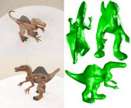
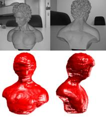
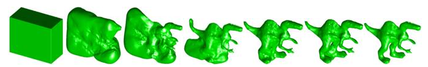
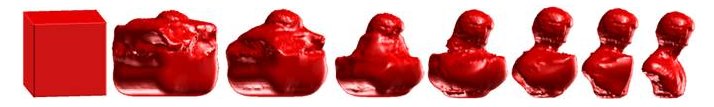

| about me | curriculum vitae | research | demos | courses |
Active Contour in the 3D Context  3D object reconstruction from image(s) is a central problem studied from the very beginning of computer vision. In essence, it is the reverse process of rendering, which depends on many factors, e.g., object's geometry, material, environment, illumination, etc. This reverse process is too difficult to solve directly, which makes it still an open problem. But given dozens of images taken from different views, the problem can be tackled by getting some simple geometric relationship using the data redundancy. This is what the multi-view stereo does. Under the assumption that the object surface is Lambertian and the illumination is fixed, a point on the surface will have identical intensity (color) values in different views. In this paper, we study
Finally, we get a pretty robust algorithm which can automatically converge to the object shape from the input original images without user interaction under complex background.   Publication:
|
Last updated on Feb. 10, 2010